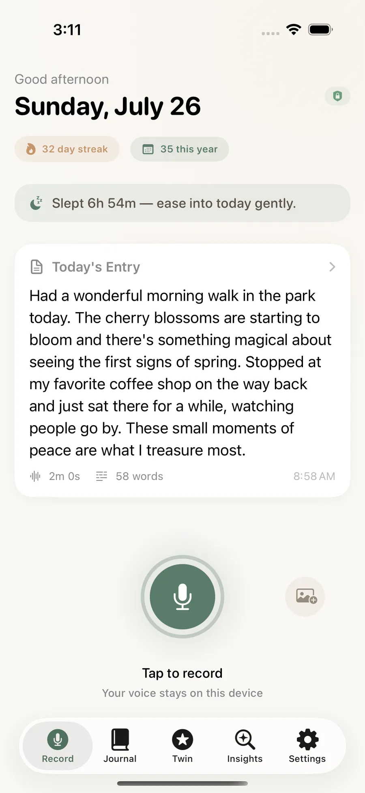

A voice journal that transcribes on your phone and quietly builds a picture of who you are. No account, no server, no internet permission at all.

The whole product, in the order you meet it.
Words appear as you speak, transcribed by your phone. Nothing is uploaded, because there is nothing to upload to.
on-deviceThe people you mention become points in a graph. How you sounded gets kept alongside what you said.
local databaseAsk it something and it answers from your own entries, naming which ones. When it has too little, it says so.
no guessingEvery entry is a star. Enough of them and the shape of a life shows up in a way no single night could tell you.